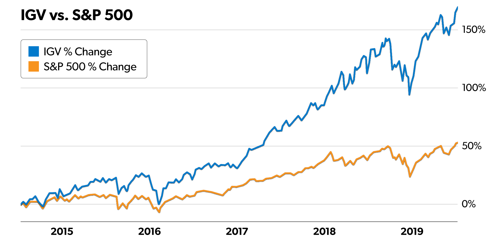

By Matt McCall
The Most Realistic Chance You Have at Making 100 Times Your Money in the Stock Market
Note: Each day leading up to the 10X Innovation Summit, Matt will release a brand-new video and article, explaining one of the investing “megatrends” he is closely tracking right now. Watching these videos is the best way to prepare for the big night, so be sure to check back daily through July 31st.
There’s an old business joke about a down-and-out entrepreneur who is asked how he went bankrupt.
“Gradually,” he replies. “Then suddenly.”
So much of the change in our lives is of the “gradually, then suddenly” variety. A long series of tiny, gradual changes alter our world, yet we barely notice them… until we wake up one day and realize a massive change has taken place.
For example, a toddler changes a little bit every day. The changes are hard to notice… and then the parent wakes up one day and that chubby toddler is a skinny “big kid” off to kindergarten. Or, you might be one of the hundreds of millions of people who started checking your new smartphone a tiny bit more every day… and then you woke up one day and realized you’re addicted to the darn thing and on it all the time.
I’m bringing up the “gradually, then suddenly” phenomenon with you today because of money.
Right now, one of the world’s most powerful, most transformational technologies is just starting to change the world in amazing ways. The radical change it will create in the future will be one of the greatest wealth building opportunities of your life. I’m talking about an “internet-sized” or an “Amazon-changes-retail-sized” opportunity.
Play this opportunity right, and you’ll be able to retire much earlier than you thought possible… or be able to buy that home on the water with cash.
Unfortunately, many people will miss this once-a-decade opportunity. That’s because the transformational change this technology is creating is hard to spot. But trust me, one day millions of people just like you will wake up and realize the way we shop, travel, work, and play has massively changed… and they let the opportunity slip by.
Don’t be one of them.
Here’s a summary of the epic opportunity in front of you…
Why Everything is About to Get Easier and More Efficient
How much time did Excel save the human race?
A billion years? Ten billion years?
Microsoft originally marketed a spreadsheet program called Multiplan in 1982. This project morphed into Excel, the first version of which was introduced in 1985. Excel is now the world’s most popular spreadsheet software. It has saved us stupendous amounts of time by allowing us to automate calculations and financial analysis… instead of doing single calculations by hand. One person running Excel can do the work of a million accountants from days past.
That’s the power of software.
Over the past 40 years, software has created an explosion of efficiency and human productivity. Healthcare, education, transportation, manufacturing, energy production, food production, retail, banking, you name it – software programs have allowed us to do it much more efficiently. The equivalent of Excel saving us a billion hours of tedious work has occurred across all industries.
Given all the time, money, and frustration software has saved us – and all the value it has created for individuals and businesses – it’s no wonder software leader Microsoft reached the mythic market valuation of $1 trillion in 2019.
It’s also no wonder software investors have made more than 18,000% in business software leader Oracle… more than 4,000% in marketing software leader Salesforce.com… more than 8,100% in PDF software leader Adobe Systems… and more than 34,000% in Microsoft (that’s a 3,401-bagger return).
As advanced as software has become… as much time and frustration it has saved the human race… you ain’t seen nothing yet. Software as we know it is about to take a quantum leap in power and usefulness. That leap is thanks to artificial intelligence.
Artificial Intelligence in a Nutshell
By now, most people know the basics of artificial intelligence. In a nutshell, “AI” is extremely powerful software running on extremely powerful computers. Our hardware and software is becoming so powerful that computers are starting to think for themselves. The implications are incredible… and economically, they run into the trillions of dollars.
AI will create value for individuals and businesses, changing the world just like conventional software has… only in a bigger way. It will lead to stock market gains in the 4,000%-34,000% range, just like conventional software has.
When I talk about the once-in-a-decade investment opportunity that is AI, I often get shrugs. Although AI is interesting – and the stocks related to it have 100-bagger potential – most people don’t see it at work every day in their lives.
However, AI is already in your life. Right now, it is in the “stealth change” stage… making tiny gradual changes every single day. For example…
- Uber uses AI to dispatch drivers and link them with customers.
- Amazon uses AI to recommend potential purchases to you.
- Facebook uses AI to arrange and customize its news feeds.
- The world’s largest investment firms are using AI to create and manage stock portfolios.
- Airlines use AI to land planes.
- Dating sites like Match.com use AI to help people find potential soulmates.
- Healthcare firms are using AI to scan DNA, blood, and other test results to spot problems with greater accuracy than human experts.
- Recruiting firms are using AI to sift through resumes and job applications and recommend the best candidates. No humans needed.
- Tesla’s cars use AI for self-driving functions.
I could go on to list 100 more major AI uses, but you get the idea. AI is already being used to save us money, time, and frustration. For many people, AI is nowhere… and everywhere. And one day, we’ll wake up and realize it has massively changed our world.
As an investor who knows how software’s ability to save us money, time, and frustration can lead to 100-fold investment gains, I’m so bullish on AI that I’m foaming at the mouth.
AI could allow the U.S. to save hundreds of billions of dollars in healthcare costs. It will lower the price of electricity and food. In manufacturing, AI will anticipate needed machine fixes, improve assembly line efficiency, and accelerate the product design process. The savings here run into the hundreds of billions of dollars.
Every business in every sector will benefit from AI. Conventional software made us more efficient and lowered prices. AI will do the same.
How Can I Invest in AI?
Just like the early changes AI is creating, AI stocks are tough to spot for the untrained eye. Many of the biggest AI innovations are occurring inside the walls of giant technology firms like Alphabet (GOOGL), Facebook (FB), Amazon (AMZN), Microsoft (MSFT), and IBM (IBM).
While I believe AI could spur Alphabet and Amazon to all-time highs in profits and market value appreciation, at gigantic market caps north of $750 billion, those two companies are very unlikely to grow 10X, 20X, or 30X their current size.
You can also consider companies involved in manufacturing computer memory. Smart computers must have enormous amounts of memory to store all the things they learn. Memory storage firm Micron is worth a look here.
However, my preferred way to play AI is through what I call “AI stocks in disguise.” That’s my term for small and mid-cap software companies using AI to improve and transform their product lineups. Some interesting names to check out are Upland Software, Domo, and Model N.
I know, I know… “software” doesn’t sound all that exciting.
But if you held a gun to my head and forced me to pick just one kind of business to invest in for the next 20 years, I’d probably pick software.
I understand why this concept doesn’t make people immediately sit up and take notice. A piece of software isn’t tangible. It’s not something you can easily explain or hold in your hand. It’s basically a set of computer instructions. From a “wow factor” point of view, a software program can’t compete with a beautiful smartphone or a Tesla sports car. Being a shareholder of software companies isn't something most folks rave about during cookouts and cocktail parties.
But it should be.
I’ve been analyzing and owning businesses for over two decades now. I’ve analyzed every kind of business under the sun. I like to think I’ve accumulated a great deal of experience and knowhow. And I have to tell you, I love the software business.
I love the software business for the same reason I prefer a home cooked meal made with fresh ingredients over a McDonald’s meal: I prefer – and appreciate – great quality.
Software businesses are among the most profitable, highest-quality businesses on Earth. Plus, their products and services can massively improve our lives. A great software program can help you make smart business decisions, find travel deals, streamline business communication, and get a cheap ride home.
The use of software can allow a business to double and triple its profits. Software has massively improved our ability to communicate, share information, transact, gather data, and analyze data.
Software businesses employ the power of scalability in a way few other businesses can match. Scalability is the ability of a business to massively grow revenues while minimally growing the costs associated with producing those revenues.
For example, a lawn-mowing business is not scalable. If you own a lawn-mowing business and want to double in size, you’ll have to buy twice as many lawn mowers as you have now, and you’ll have to hire twice as many lawn-mower operators as you have now. Because of this, your revenue cannot soar far beyond your costs.
On the other side of the spectrum, you have software businesses.
Once you spend the money to create a useful software product or service, you can sell copies of it to the whole world at very little additional cost. This often leads to giant profit margins and giant market value appreciation.
It took a lot of work in the early days to create the technologies and businesses behind software leaders like Microsoft and Oracle. But once they were created, these two businesses could add new users and increase their revenues much faster than they increased costs. Their market values exploded higher as a result.
You’d be hard pressed to find a business that has generated more giant stock market winners that occurred in relatively short time periods of time as the software business. You could think of the software industry as a college sports team that produces more future All-Stars than any other college team. Maybe there’s something in the water (hint: it tastes like scalability).
It's one thing for me to tell you about the power of the software business model. But let me show you its power as well.
Below is a chart that plots the performance of the major software stock ETF, symbol IGV (blue line), versus the performance of the benchmark S&P 500 index (orange line) since 2014. The S&P is up 52% over the past five years. The software ETF – full of scalable, high-profit margin stocks – is up 170% during the same time… over triple the broad market’s gains.
Thanks to the emerging power of AI, I believe the world of small and mid-cap software stocks will prove to be a major breeding ground for future 10X stock market winners. I have no doubt some of the elite firms will rise more than 100-fold… just like the software leaders that emerged in the 1990s did.
Summing Up
Gradually… then suddenly.
That’s how many of the biggest changes in our world occur. That’s how I believe most people will view the massive change AI brings.
Just like conventional software saved us massive amounts of time, money, and frustration, AI will do the same. Just like conventional software drove some elite firms to 100X-plus stock gains, AI will do the same. I encourage you to see it as one of the greatest wealth building opportunities of your life. Don’t let it pass you by.
Regards,

Matt McCall
Senior Investment Strategist, InvestorPlace